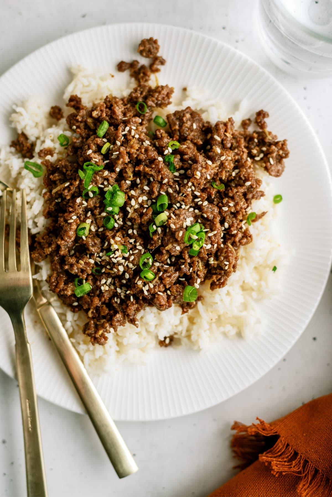

Home
Korean Beef

Description
Healthier Korean Beef is a quick and flavorful dish made with lean ground beef cooked until tender and combined with a delicious sweet and savory sauce. The sauce features soy sauce, pure maple syrup, fresh garlic, ginger, sesame oil, and a touch of red pepper flakes, creating a perfect balance of rich umami flavor, gentle sweetness, and mild heat. Chopped green onions add freshness and a pop of color, making this simple dish both appetizing and satisfying.
Ready in about 20 minutes, this Korean-inspired beef recipe is ideal for busy weeknights when you want a homemade meal without spending hours in the kitchen. Serve it over steamed white or brown rice for a hearty beef bowl, or spoon it into crisp lettuce cups for a lighter option. With its tender texture, bold flavors, and protein-rich ingredients, this dish is an easy and versatile alternative to takeout that the whole family can enjoy.
Ingredients
- 1.25 lbs lean ground beef
- 1/3 cup soy sauce
- 1/3 cup maple syrup
- 3 small cloves of garlic finely minced
- 1 inch ginger fresh, grated
- 1/4 tsp red pepper flakes
- 2 tbsp sesame oil
- salt & pepper to taste
- 2 green onions finely chopped
- beef broth as needed
Steps
- Preheat large skillet over medium-high heat. Add in beef and break apart as it browns with a wooden spoon. Once the beef is completely cooked, pour into a colander, and drain any excess fat off of the meat. Place meat back into the pan.
- Reduce heat to medium and add in soy sauce, maple syrup, minced garlic, ginger, red pepper flakes and sesame oil. Cook about five minutes or until the soy sauce reduced slightly. Taste and adjust seasonings with salt and pepper. If meat mixture is getting dry, splash in some beef broth as needed or desired. Stir in green onion.
- Serve over brown right, in lettuce cups, or on its own.